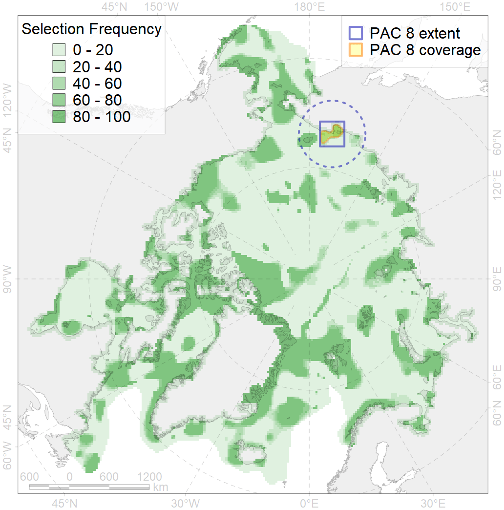
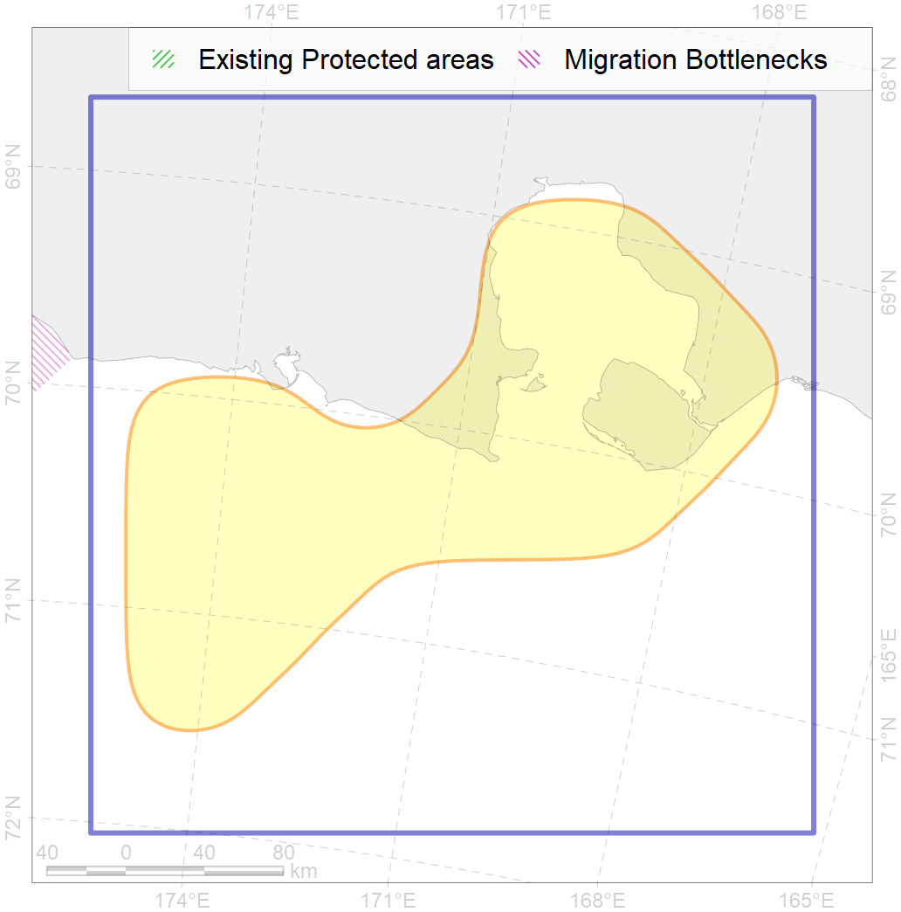

8
For more information regarding this PAC and to conduct custom spatial analysis using the PAC data or any spatial query, please consult Accenter.

1
CFs entirely within the PAC area
5
CFs at least 25% within the PAC area
4
CFs with at least 50% of their target achieved in the PAC
7
CFs with at least half of their target achieved in the PAC
| CF ID | CF Name | Proportion in the PAC | Conservation Target | Contribution to ArcNet Target Achievement | PAC’s Contribution to the Achieved Target |
|---|---|---|---|---|---|
| 7222 | Kelp forests of Chaunskaya Bay | 100.0% | 30.0% | 294.3% | 100.0% |
| 7107 | II.1.1.16. Chaunskaya Bay | 96.5% | 31.4% | 287.1% | 100.0% |
| 3102 | Polynyas distribution in the Chukchi Seam coastline region | 87.8% | 12.0% | 511.2% | 96.4% |
| 2062 | Ringed seal whelping areas in the East-Siberian Se | 63.6% | 12.0% | 385.7% | 82.7% |
| 7012 | East Siberian Sea Kolyma and Chaun refugia, enclaves of the boreal North Pacific fauna | 35.3% | 49.9% | 65.7% | 51.9% |
| 8035 | Salt marshes of the East-Siberian Sea LME | 15.1% | 30.0% | 40.8% | 38.7% |
| 6105 | Thick-billed murre (Uria lomvia hecheri) breeding colonies buffer feeding area | 12.1% | 36.0% | 23.7% | 11.7% |
| 3040 | Marginal Ice Zone distribution in July in the East-Siberian Sea LME | 11.2% | 24.0% | 37.2% | 37.2% |
| 7044 | Western Chukchi transitional zone | 8.5% | 13.6% | 44.8% | 19.4% |
| 9030 | polar bear denning areas of LV (Laptev Sea) subpopulation | 7.2% | 52.8% | 11.4% | 11.3% |
| 2009 | Bearded seal whelping areas in the East-Siberian Sea | 6.4% | 12.0% | 41.6% | 27.7% |
| 6016 | Long-tailed duck (Clangula hyemalis) East Asian moulting&migration stopovers | 6.3% | 48.0% | 8.2% | 6.0% |
| 4026 | Feeding/migration area of the Chinook Salmon (Oncorhynchus tshawytscha) | 5.9% | 6.0% | 80.1% | 8.7% |
| 4034 | Feeding area of the Taranetz’s Char (Salvelinus taranetzi) | 5.7% | 32.4% | 14.4% | 8.6% |
| 4015 | Feeding area of the Broad whitefish (Coregonus nasus), American populations | 5.5% | 32.4% | 13.9% | 11.9% |
| 6030 | Glaucous gull (Larus hyperboreus pallidissimus) breeding grounds | 5.3% | 12.0% | 37.2% | 6.3% |
| 4033 | Feeding area of the Dolly Varden (Salvelinus malma) | 5.1% | 12.0% | 34.8% | 7.2% |
| 6011 | Brent goose (Branta bernicla nigricans) Asian breeding&moulting grounds | 4.9% | 18.0% | 24.4% | 9.0% |
| 4014 | Feeding area of the Siberian whitefish (Coregonus pidschian) | 4.5% | 24.0% | 15.4% | 9.7% |
| 4021 | Feeding area of the Inconnu (Stenodus leucichthys nelma), Euro-Asian populations | 4.0% | 32.4% | 10.1% | 8.5% |
| 3004 | Fast Ice distribution in the Chukchi Sea region | 3.7% | 6.0% | 36.9% | 5.6% |
| 4018 | Feeding area of the Vendace, Least cisco (Coregonus sardinellа), Euro-Asian populations | 3.7% | 24.0% | 12.6% | 6.6% |
| 6066 | Common eider (Somateria mollissima v-nigrum) breeding&moulting grounds | 3.4% | 33.6% | 7.8% | 7.6% |
| 3008 | Fast ice distribution in the Eastern part of the Laptev Sea and the East-Siberian Sea | 3.2% | 6.0% | 49.8% | 10.7% |
| 9004 | polar bear of the CS (Chukchi Sea) subpopulation distribution | 3.1% | 32.4% | 6.8% | 5.8% |
| 4052 | Range of the Fourhorn Sculpin (Myoxocephalus quadricornis), American populations | 3.1% | 3.0% | 84.4% | 5.8% |
| 7105 | II.1.1.14. East Siberian middle shelf | 2.8% | 5.2% | 38.8% | 10.8% |
| 4036 | Distribution of the Borisov’s Arctic cod (Arctogadus borisovi) | 2.5% | 13.2% | 16.0% | 7.0% |
| 4008 | Feeding / nursery area of the Arctic Cisco (Coregonus autumnalis), Eurasian populations | 2.4% | 38.4% | 5.3% | 5.0% |
| 4077 | Fish zoogeography, Arctic Region, High-Arctic Shelf Province, Laptev – East-Siberian District | 2.3% | 12.0% | 15.0% | 7.9% |
| 7104 | II.1.1.13. East Siberian iInner shelf | 1.4% | 6.1% | 19.8% | 5.1% |